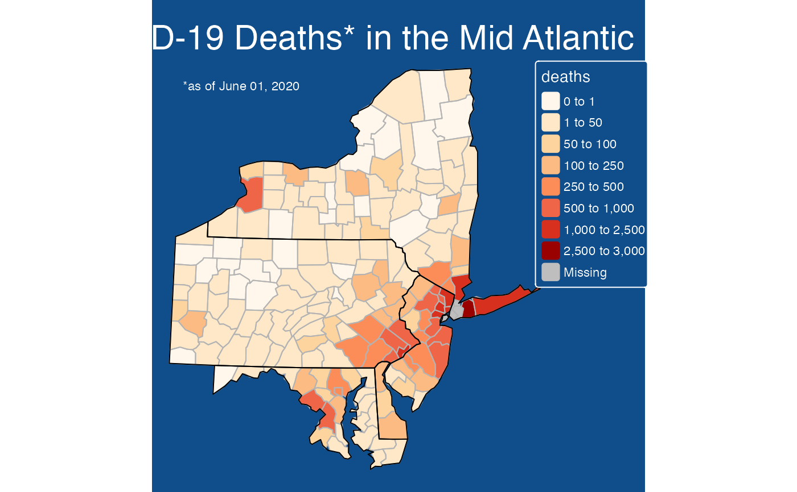

Uses the tmap package to generate a thematic map at the
county level. Input consists of a dataframe with countyFIPS identifiers.
countyMap( data = NULL, parameter = NULL, state_SPDF = "USCensusStates_02", county_SPDF = "USCensusCounties_02", palette = "YlOrBr", breaks = NULL, style = ifelse(is.null(breaks), "pretty", "fixed"), showLegend = TRUE, legendOrientation = "vertical", legendTitle = NULL, conusOnly = TRUE, stateCode = NULL, projection = NULL, stateBorderColor = "gray50", countyBorderColor = "white", title = NULL )
| data | Dataframe containing values to plot. This dataframe
must contain a column named |
|---|---|
| parameter | Name of the column in |
| state_SPDF | SpatialPolygonsDataFrame with US states. It's data
|
| county_SPDF | SpatialPolygonsDataFrame with US counties. It's data
|
| palette | Palette name or a vector of colors based on RColorBrewer or Viridis. |
| breaks | Numeric vector of break points. |
| style | Method to process the color scale. |
| showLegend | Logical specifying whether or not to draw the legend |
| legendOrientation | Orientation of the legend. Either 'vertical' or 'horizontal' |
| legendTitle | Text string to use as the legend title. |
| conusOnly | Logical specifying Continental US state codes. Ignored when
the |
| stateCode | Vector of state codes to include on the map. |
| projection | Specified method to represent surface of Earth. |
| stateBorderColor | Color used for state borders. |
| countyBorderColor | Color used for county borders. |
| title | Text string to use as the plot title. |
A ggplot object.
See tmap::tm_fill() for a more detailed description of
the following parameters:
palette
breaks
Color palettes can be chosen from either RColorBrewer or Viridis. See
tmaptools::palette_explorer() for a list of available palletes.
# \donttest{ library(MazamaSpatialPlots) countyMap( data = example_US_countyCovid, parameter = "cases", breaks = c(0,100,200,500,1000,2000,5000,10000,20000,50000,1e6), title = "COVID-19 Cases on June 01 2020" )countyMap( data = example_US_countyCovid, parameter = "deaths", state_SPDF = USCensusStates_02, county_SPDF = USCensusCounties_02, palette = "OrRd", breaks = c(0, 1, 50, 100, 250, 500, 1000, 2500, 3000), stateCode = c( "NY", "PA", "MD", "NJ", "DE"), stateBorderColor = "black", countyBorderColor = 'grey70', title = "COVID-19 Deaths* in the Mid Atlantic" ) + tmap::tm_layout( main.title.size = 1.2, main.title.color = "white", attr.color = 'white', bg.color = "dodgerblue4" ) + tmap::tm_credits("*as of June 01, 2020", col = "white", position = "left")# }